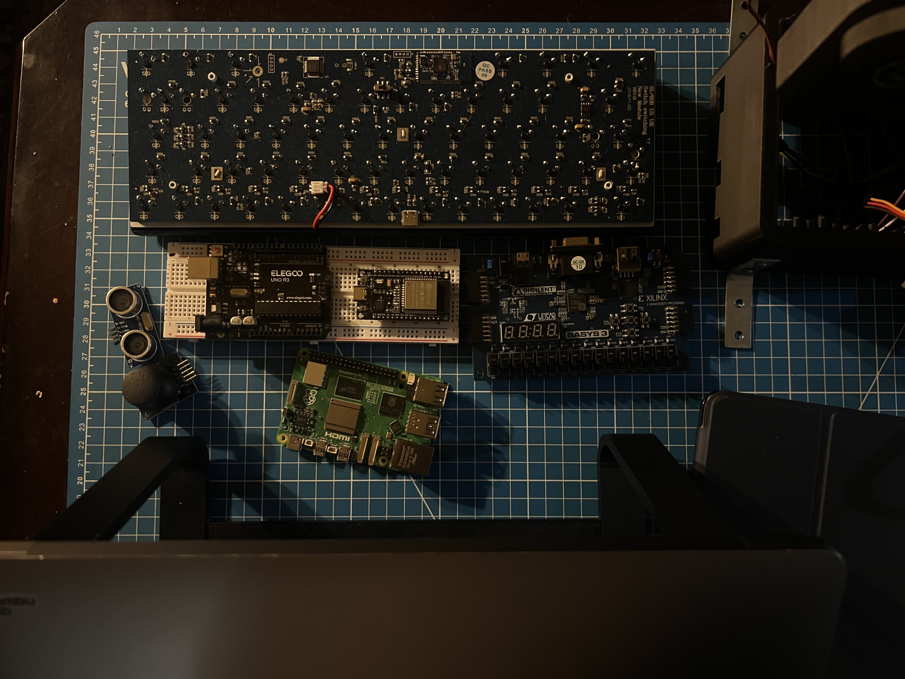

Why start with a cyberdeck?
A complete phone is a system-of-systems problem. Starting with a Raspberry Pi-based cyberdeck provides a practical environment for learning Linux, displays, device interfaces, power, sensors, thermal management, and application-level software before attempting custom compute hardware.

Compute roadmap
In parallel, the FPGA and RISC-V work develops the digital-design knowledge needed to understand what sits below the operating system. The point is not to pretend a first prototype can replace a commercial smartphone SoC; it is to build the skills required to reason about each layer of the stack.
End state
The long-term project is a custom phone that combines mechanical enclosure design, display and user input, embedded power electronics, communications, a management controller, Linux-based software, and increasingly custom compute hardware.